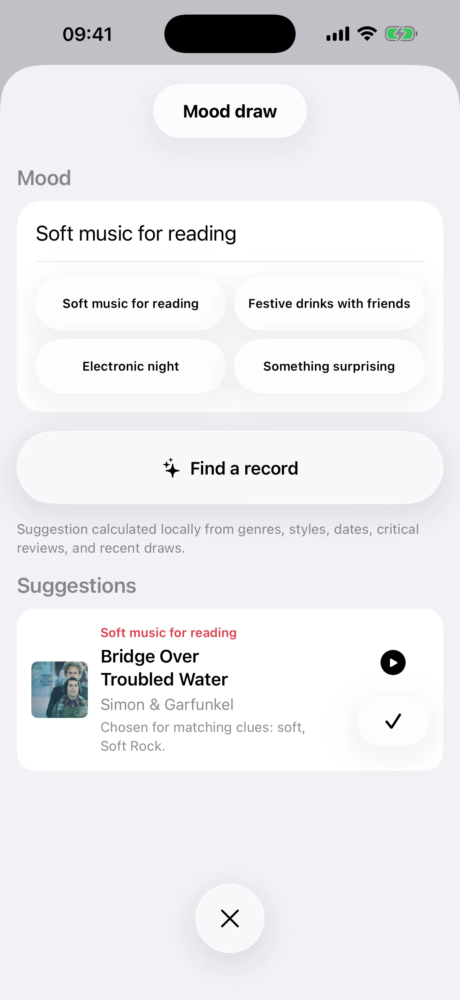

Record Picker reuneix sortejos, Mood Pick, catalogació enriquida, iCloud, exportació, gestió de duplicats, 32 idiomes i aplicacions natives per a iPhone, iPad, Apple Watch i Mac.
Una col·lecció ben cuidada
Construeix una col·lecció neta, verificable i agradable, fins i tot quan les bases públiques no són suficients.
L’escaneig de codis de barres recorre a Discogs quan MusicBrainz no coneix la referència, i emplena la fitxa automàticament si Discogs troba l’edició.
Metadades de MusicBrainz i Discogs
Llista de desitjos separada del calaix
Detecció de duplicats i comprovacions de qualitat
Portades i dades visuals
Mantén la col·lecció agradable de navegar amb portades que recuperes o tries tu mateix.
Cerca de portades amb Cover Art Archive · iTunes Search · Deezer
Importació manual des de Fotos o Fitxers
Cerca web quan falta la portada
Restaura la portada original
Edició de caràtules i dades visuals
Selector horitzontal d'iPhone
Gira l'iPhone per triar amb la coberta, les metadades i els controls visibles alhora.
Coberta a l'esquerra i detalls complets a la dreta
Títol, artista, etiquetes de gènere, format, segell i any d'alta visibles
Botó Pick centrat al costat de les metadades
Barra inferior flotant equilibrada entre la coberta i la vora de la pantalla
Les estadístiques es redistribueixen en tres columnes en horitzontal
Selecció aleatòria personalitzable
Tria el proper disc sense perdre el control, amb un atzar que manté viva la col·lecció.
Sorteig ponderat que afavoreix els discos menys escoltats
Filtres per any, gènere, format, velocitat i favorits
Exclusions temporals per apartar sense esborrar
Llisca la coberta a l'esquerra per triar un nou disc
Llisca a la dreta per desfer l'últim sorteig, també a l'iPad
Historial consultable per entendre què torna sovint

Ambients i reproducció
Tria segons l'ambient i conserva un rastre d'escolta perquè la col·lecció es vagi revelant amb el temps.
Sorteig per ambient amb models locals d'Apple quan estan disponibles
Coincidència local basada en metadades quan els models no estan disponibles
Estadístiques narratives amb Apple Intelligence al dispositiu quan estigui disponible
Historial recent de discs sortejats o reproduïts
Opcions de reproducció
Apple Watch redissenyat
La caràtula passa a ser un fons desenfocat, amb botons de favorit, desfer l’últim sorteig i següent, cadascun amb resposta hàptica pròpia.
Disseny adaptat dels 41 mm fins a l’Ultra
Retocs: full de tria de caràtula més equilibrat a iPad, sincronització iPhone-Watch més ràpida i petició d’avaluació discreta.
Navegació i coneixement de la col·lecció
Explora, revisa i entén la col·lecció sense sortir de l’app, amb interfícies pròpies per a iPhone i iPad.
Navegació ràpida pel calaix
Petita estrella vermella a cada fila de l'iPhone i rajola de l'iPad per marcar o desmarcar un favorit
Botons Liquid Glass unificats
Files iPad llegibles i accés directe als detalls des de les caràtules
Arrossegar i deixar anar a iPad quan realment ajuda
Detecció de duplicats i comprovacions de qualitat
Metadades de MusicBrainz i Discogs
Lliscar per eliminar a la llista de desitjos i a l'historial d'AI Mood
Sincronització iCloud sense complicacions
Sense proveïdors d’IA de tercers ni IA al núvol; Apple Intelligence queda al dispositiu
Calaix, desitjos, duplicats resolts, exclusions, historial, eliminacions recuperables i caràtules pròpies segueixen els teus dispositius.
Edició de caràtules i dades visuals
CSV per a fulls de càlcul i JSON net, separats per calaix i llista de desitjos
Còpia de seguretat completa sota demanda
Les ressenyes d’Internet no s’extreuen mai automàticament
32 llengües
Record Picker està disponible en 32 llengües, amb noves variants i localitzacions: àrab, català, coreà, danès, anglès d’Austràlia/Canadà/Regne Unit, finès, francès canadenc, hebreu, hindi, indonesi, noruec, polonès, portuguès, rus, suec i turc.
Àrab, hebreu, hindi, japonès, coreà i xinès simplificat i tradicional
Versions
v2.2
Record Picker 2.2 fa més precisa la importació, catalogació i redescoberta de la col·lecció.
Disponible ara al Mac · Properament a l’iPhone i l’iPad
La importació CSV separa clarament la col·lecció de la llista de desitjos, permet assignar columnes i mostra un resum detallat.
Els suggeriments d’artistes, gèneres i segells, i el format físic preferit, acceleren l’entrada sense sobreescriure les metadades pròpies.
L’ordenació i els filtres multigènere faciliten l’exploració i afinen Random Pick i Mood Pick.
Disc del dia mostra fonts, actualitat i proves més sòlides, amb valoració de rellevant o no rellevant per millorar els suggeriments.
Les millores de fiabilitat, accessibilitat i traducció mantenen les col·leccions grans àgils i privades a l’iPhone, l’iPad i el Mac.
iOS 2.1.1 · macOS 2.2
Record Picker fa que els primers minuts siguin més fluids i l’ús diari més fiable.
iPhone · iPad · Mac · Apple Watch · Ja disponible
Importació CSV de Discogs més robusta, fins i tot amb exportacions incompletes o multilínia.
Ajuda discreta i reiniciable per a Random Pick, Mood Pick, Disc del dia, còpies de seguretat i configuració.
Apple Intelligence pot generar en privat l’anàlisi d’Estadístiques en dispositius compatibles; l’app explica quan s’utilitza l’anàlisi local.
Portades més ràpides a Mood Pick i Disc del dia, amb dissenys millorats per a iPhone, iPad i Mac.
Còpies, restauració i esborrat de dades més segurs, a més de moltes millores de traducció i ús.
La teva col·lecció continua sent privada i sota el teu control.
v1.9
Record Picker 1.9 presenta el Disc del dia: un motiu actual i privat per redescobrir un disc que ja tens.
Les notícies musicals verificades, els aniversaris destacats i, opcionalment, els concerts propers es relacionen amb la teva col·lecció íntegrament al dispositiu.
Cada suggeriment explica per què s’ha triat i cita la font amb data. Les notícies de la llista de desitjos es mantenen separades dels discos que pots escoltar.
Els recordatoris privats opcionals, el retorn de rellevància i el Disc del dia a l’Apple Watch ajuden a mantenir útils els suggeriments. La col·lecció no s’envia mai al servei de notícies.
Record Picker ≤ 1.8
v1.8
Record Picker 1.8 unifica iPhone, iPad, Apple Watch i Mac sota un mateix número de versió.
Més formats físics: vinil, CD, SACD, SACD híbrid, MiniDisc, casset, DVD-Audio, Blu-ray Audio i discos de 78 rpm.
Camps específics de música clàssica per a obres, números de catàleg, directors, orquestres, conjunts, solistes, dates i llocs d’enregistrament.
Importació i exportació CSV més clares amb el camp neutre Media Format, mantenint la compatibilitat amb els fitxers anteriors.
Més fiabilitat per a còpies de seguretat, favorits, caràtules, importacions i correccions de metadades.
Separa les correccions fiables de les decisions que requereixen la teva atenció.
Mostra costat per costat les diferències entre MusicBrainz i Discogs.
Explica amb claredat la importació, la qualitat de les dades, Random Pick, Mood Pick i Free/Pro.
Conserva tant l’any de publicació original com l’any de l’edició concreta.
v1.6
Record Picker és gratuït, amb Lifetime Pro i una aplicació nativa per a Mac
Record Picker ara és gratuït per a col·leccions de fins a 100 registres; una compra única de Pro desbloqueja una col·lecció il·limitada a iPhone, iPad i Mac, sense subscripció.
La nova aplicació nativa per a Mac converteix la pantalla gran en un centre de comandaments per navegar, enriquir, netejar i redescobrir la col·lecció.
La sincronització d'iCloud és més sensible, amb el seu estat ara visible en un centre de sincronització dedicat.
Les importacions CSV ara protegeixen els favorits existents; també podeu restaurar els preferits només des d'una còpia de seguretat anterior sense substituir la col·lecció actual.
La detecció de duplicats és molt més ràpida, la selecció de ressenyes és millor i la reindexació de paraules clau de revisió ara mostra un progrés clar.
Els diagnòstics d'emmagatzematge esborrats informen de problemes en lloc de fer que un error sembli una pèrdua de dades.
v1.5
Sincronització més forta, il·lustració i qualitat de dades
Sincronització d'iCloud més fiable entre iPhone, iPad i Apple Watch.
Les obres d'art ara s'afegeixen automàticament després de l'entrada manual o de codi de barres, amb alternatives més robustes.
Eines de qualitat de dades millorades, gestió de duplicats i recuperació de revisions crítiques.
v1.4
iPhone horitzontal, gestos sobre cobertes i favorits més ràpids
Selector horitzontal d'iPhone: gira el telèfon per veure la coberta a l'esquerra i tots els detalls del disc a la dreta, amb títol, artista, gèneres, format, segell i any d'alta.
El botó Pick queda centrat al costat de les metadades, mentre la barra inferior flota equilibrada entre la coberta i la vora de la pantalla.
Llisca la coberta de l'àlbum de dreta a esquerra per triar un nou disc, o d'esquerra a dreta per desfer. El toc encara obre els detalls, la pressió llarga encara exclou, i també funciona a l'iPad.
A la caixa, una petita estrella vermella substitueix la fitxa de Favorit a cada fila de l'iPhone i a cada rajola de l'iPad: un toc per marcar, un toc per desmarcar.
Les estadístiques són més denses en horitzontal: a l'iPhone les targetes passen a tres columnes, com a l'iPad.
Gestos més nets arreu: torna el lliscament per eliminar a la llista de desitjos i s'afegeix a l'historial d'AI Mood; s'han retirat els gestos globals que interferien amb l'eliminació de files.
v1.3
Apple Watch redissenyat, recurs a Discogs i 32 llengües
La caràtula passa a ser un fons desenfocat, amb botons de favorit, desfer l’últim sorteig i següent, cadascun amb resposta hàptica pròpia.
Disseny adaptat dels 41 mm fins a l’Ultra
L’escaneig de codis de barres recorre a Discogs quan MusicBrainz no coneix la referència, i emplena la fitxa automàticament si Discogs troba l’edició.
Record Picker està disponible en 32 llengües, amb noves variants i localitzacions: àrab, català, coreà, danès, anglès d’Austràlia/Canadà/Regne Unit, finès, francès canadenc, hebreu, hindi, indonesi, noruec, polonès, portuguès, rus, suec i turc.
Retocs: full de tria de caràtula més equilibrat a iPad, sincronització iPhone-Watch més ràpida i petició d’avaluació discreta.
v1.2
Catàleg, tria intel·ligent i company Apple Watch
Catàleg musical complet per importar, afegir àlbums manualment i escanejar codis de barres.
Sorteig aleatori animat, filtres per any, preferits, exclusions temporals, historial d'escolta i estadístiques de col·lecció.
Sorteig per ambient amb models locals d'Apple quan estan disponibles; si no, coincidència al dispositiu des de les metadades.
Cerca de metadades amb MusicBrainz, portades de Cover Art Archive o importació manual, còpia/restauració, Dreceres de Siri i Apple Watch.
La col·lecció continua desada localment; les cerques de metadades i portades només passen quan l'usuari les inicia.
v1.1.1
Millores de l'App Store
Interfície i fonaments interns refinats per a una experiència més fluida.
Millor compatibilitat amb iPad.
Sorteig per ambient amb millor ús de les ressenyes crítiques.
Qualitat de dades: fitxes de disc, supressió manual de files i cerques Discogs/MusicBrainz.
Pistes que falten: cerca a MusicBrainz seguida de cerca a Discogs.